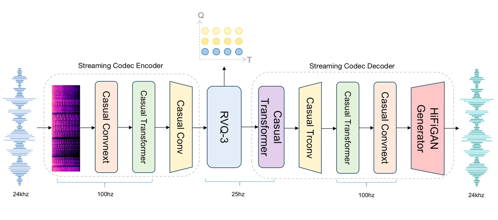
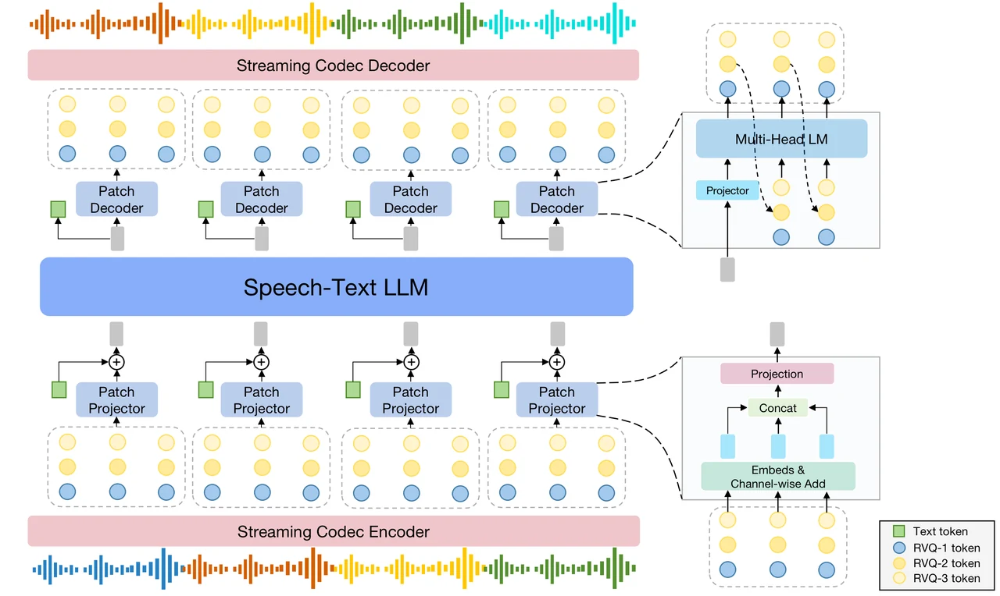

Our first human-like real-time interaction system towards context intelligence.
SpeechGPT 2.0-preview is our first human-like real-time interaction system as we move towards context intelligence. Trained on millions of hours of speech data, this end-to-end spoken language model features human-like spoken expressions and low-latency responses at the millisecond level, enabling natural, fluid real-time interruption interactions. SpeechGPT 2.0-preview aligns speech and text modalities well. On one hand, it demonstrates significant speech style generalization capabilities, following user commands to achieve multi-emotion, multi-style, and multi-tone control with intelligent switching. It also has strong role-playing abilities, simulating various characters' tones and emotional states. Additionally, it showcases a range of vocal talents, including poetry recitation, storytelling, and speaking in dialects. On the other hand, while it excels in vocal expressiveness, it also has impressive intelligence and text capabilities, enabling it to support tool calls, online searches, and external knowledge base access. Currently, SpeechGPT 2.0-preview has been trained only on Chinese speech data and has not been trained on English voice data. As a result, the model does not yet support English conversation.
We have open-sourced the inference code, model weights, and a brief methodology introduction for SpeechGPT 2.0-preview on https://github.com/OpenMOSS/SpeechGPT-2.0-preview/blob/main/README_EN.md
Welcome to experience our Demo.
SpeechGPT 2.0-preview is an end-to-end spoken dialogue language model. Building on our insights and technological advancements in the field of end-to-end speech dialogue, we have developed an ultra-low bitrate streaming speech Codec that jointly models semantics and acoustics. We have constructed an efficient speech data crawling system, a multifunctional and high-efficiency speech data cleaning pipeline, and a comprehensive multi-granularity speech data annotation system, accumulating millions of hours of real speech data with meticulous annotation. We have developed a conversational dialogue speech synthesis system with strong voice cloning ability, synthesizing hundreds of thousands of hours of multi-role, multi-style speech-to-speech dialogue data based on this. We have proposed a new speech-text mixed-modeling architecture and a multi-stage training process for mixed speech-text modeling to balance textual and speech capabilities, preventing the model from compromising its intelligence while learning speech capabilities, and enabling it to seamlessly replace text models in various frameworks, thus supporting functions such as tool invocation, internet search, and external knowledge base integration. By modeling speech dialogue in an end-to-end manner, SpeechGPT 2.0-preview has achieved a latency of less than 200ms in practical tests, providing users with a smooth real-time interactive experience.
Through the experimental process, we also observed many interesting phenomena and conclusions. For example, through extensive pre-training on speech-text alignment, we found that the model could "emerge" with the ability to generalize speech styles. This includes controlling speech rate even without training on dialogue data with explicit speech rate adjustments, and adopting tones and styles of characters that the model had never seen before. Moreover, the quality of the speech data synthesis engine is key to enhancing the capabilities of the end-to-end speech model across various training stages.


SpeechGPT 2.0-preview needs further enhancement in the stability of model and sound quality. We are training and building the system for duplex models, combining RLHF to enhance the expressiveness and stability of the model, further expand the volume of speech data and expand to more languages, please look forward to the next version update.
Hanfu Chen, Ke Chen, Qinyuan Cheng, Mingshu Chen, Ruifan Deng, Liwei Fan, Zhaoye Fei, QingHui Gao, Yitian Gong, Ching Wing Kwok, Kexin Huang, Yaozhou Jiang, Xingyu Lu, Shimin Li, Zhengyuan Lin, Ruixiao Li, Qian Tu, Jin Wang, Yang Wang, Siyin Wang, Zhe Xu, Chenchen Yang, Donghua Yu, Yuqian Yao, Yucheng Yuan, Chufan Yu, Dong Zhang, YiWei Zhao, Yuqian Zhang, Jun Zhan, Xin Zhang, Xingjian Zhao, Chengyang Zhu